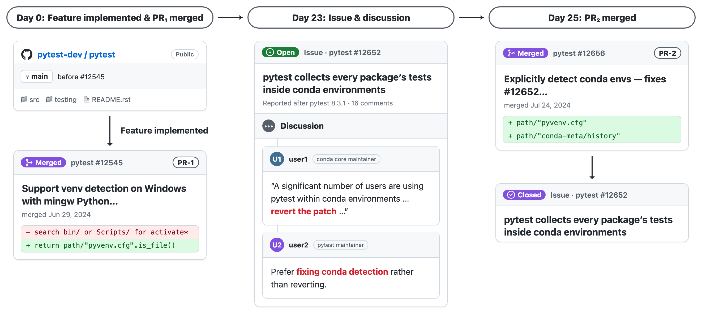

Average cost and turns per instance will be added once the runs are tallied.
Why we built it, how we collected the data, and how we score an agent.
Coding agents are usually evaluated on fully specified tasks, where every requirement is written down. Real software tasks rarely are, and a large part of engineering is foreseeing the problems a change will cause that nobody has described yet. Foresight-SWE measures exactly that: given an ordinary task, does the agent avoid the defect a human later had to fix?

Each instance pairs two pull requests from the same repository. PR1 implemented a change, passed review and merged. PR2, a median of 88 days later, fixed a defect that PR1 left behind. We mine pairs from open-source repositories on GitHub. We look for maintainers identifying PR1 in PR2's discussion, changelogs, Django's Trac tickets and security advisories via CVEs. We also use the SZZ algorithm to identify PR1 where maintainers have not attested to it in discussion. We then use LLM-as-a-judge to keep genuine pairs and build dockerized environments via agents. See Section 3 of our paper for the full details.
The agent is given the repository as it was just before PR1, together with a self-contained task statement for PR1. It is told nothing about PR2, and nothing suggests a defect is coming.
The agent works on PR1's task and submits a patch. We then run two sets of tests on it. PR1's own tests check that it did the stated task without breaking anything. The tests PR2 added check whether it also avoided the defect.
Have suggestions or ideas? Please open an issue or pull request on our GitHub repository. You can also email spp9399@nyu.edu
If you use Foresight-SWE in your work, please cite our paper!
@misc{patel2026codingagentscatchbugs,
title={Do Coding Agents Catch Their Own Bugs? (They Don't.)},
author={Shaswat Patel and Michel Liao and Peter Henderson and He He and Valerie Chen},
year={2026},
eprint={2611.01181},
archivePrefix={arXiv},
primaryClass={cs.SE},
url={https://arxiv.org/abs/2611.01181},
}Pick an instance to read the task statement the agent sees and the defect it was expected to anticipate.
Severity: It is a mixture of the above three, based on the rule defined in the table below:
| Impact \ Reach | Broad | Narrow | Rare |
|---|---|---|---|
| Corruption | critical | major | major |
| Broken | major | major if silent, else minor | minor |
| Degraded / cosmetic | minor | minor | minor |
Time to fix: Days between PR1 and PR2: how long the defect stayed in the code before it was fixed.
Security: A separate tag for fixes that close an attack, such as injection or an authorization bypass. It does not change severity. PRs mined via CVE security advisories are flagged as security too.
An LLM judge assigns impact, reach, failure mode and difficulty for every instance. See the appendix of our paper for the prompts.